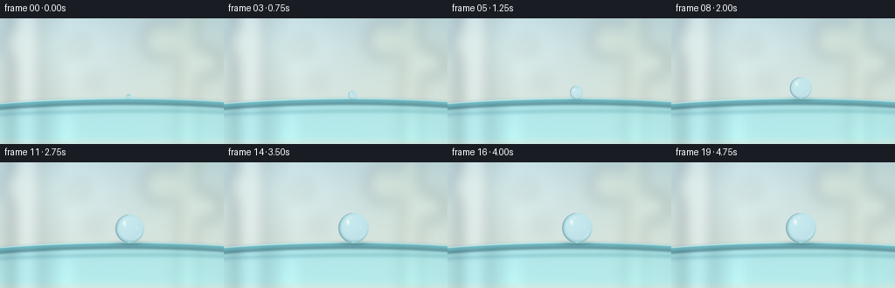
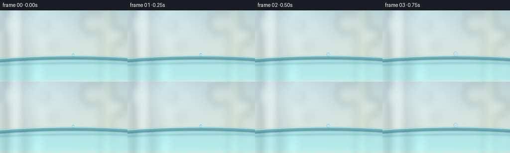
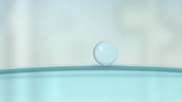

CODING AGENTS AS PIXEL WORLD MODELS
traex/GPT-5.6-Sol · mechanics_0055
点击播放 · 原生 RGB 像素
逐轮保存的候选
回放视频、检查图与代码变化。
每份候选均可单独播放。实际图片检查记录在下方工具轨迹中。
候选 01播放与检查图
点击播放 · 原生 RGB 像素


展开代码变化
--- 上一保存版本
+++ 本次保存版本
@@ -0,0 +1,218 @@
+from pathlib import Path
+import json
+import numpy as np
+from PIL import Image, ImageDraw, ImageFilter
+import artifact_io
+
+# Deterministic, supersampled procedural macro rendering.
+ROOT = Path(__file__).resolve().parent
+SPEC = json.loads((ROOT / "task_spec.json").read_text())
+W, H, N = SPEC["width"], SPEC["height"], SPEC["frames"]
+SS = 4
+w, h = W * SS, H * SS
+rng = np.random.default_rng(5501)
+
+# Pixel coordinates are represented in final-frame units even while supersampling.
+yy, xx = np.mgrid[0:h, 0:w].astype(np.float32)
+X = (xx + 0.5) / SS
+Y = (yy + 0.5) / SS
+
+
+def smoothstep(a, b, x):
+ q = np.clip((x - a) / (b - a), 0.0, 1.0)
+ return q * q * (3.0 - 2.0 * q)
+
+
+def alpha_over(dst, src, alpha):
+ """Composite float RGB src over dst with scalar alpha image."""
+ return dst * (1.0 - alpha[..., None]) + src * alpha[..., None]
+
+
+def blurred_shapes():
+ """Soft architectural light and bokeh, intentionally far out of focus."""
+ layer = Image.new("RGBA", (w, h), (0, 0, 0, 0))
+ d = ImageDraw.Draw(layer, "RGBA")
+ s = SS
+ # Distant vertical window mullions / light strips.
+ d.rounded_rectangle((13*s, -20*s, 48*s, 156*s), radius=10*s,
+ fill=(244, 250, 248, 93))
+ d.rounded_rectangle((55*s, -18*s, 67*s, 152*s), radius=7*s,
+ fill=(119, 158, 167, 29))
+ d.rounded_rectangle((204*s, -12*s, 225*s, 156*s), radius=9*s,
+ fill=(255, 247, 220, 41))
+ # Large out-of-focus highlights in restrained natural colors.
+ circles = [
+ (24, 28, 19, (252, 255, 246, 74)),
+ (88, 31, 11, (239, 249, 243, 44)),
+ (184, 25, 21, (255, 248, 220, 47)),
+ (236, 51, 16, (246, 255, 244, 56)),
+ (107, 71, 8, (244, 254, 252, 35)),
+ ]
+ for cx, cy, r, color in circles:
+ d.ellipse(((cx-r)*s, (cy-r)*s, (cx+r)*s, (cy+r)*s), fill=color)
+ return np.asarray(layer.filter(ImageFilter.GaussianBlur(8*SS))).astype(np.float32) / 255.0
+
+
+# Base atmospheric background.
+yn = Y / H
+xn = X / W
+bg_top = np.array([184., 210., 219.])
+bg_bottom = np.array([228., 235., 223.])
+base = bg_top[None, None, :] * (1-yn[..., None]) + bg_bottom[None, None, :] * yn[..., None]
+# broad luminous patch at upper left and a warm one at upper right
+light1 = np.exp(-(((X-61)/76)**2 + ((Y-23)/59)**2))
+light2 = np.exp(-(((X-220)/68)**2 + ((Y-26)/73)**2))
+base += light1[..., None] * np.array([25., 24., 19.])
+base += light2[..., None] * np.array([10., 9., 0.])
+soft = blurred_shapes()
+base = alpha_over(base, soft[..., :3]*255.0, soft[..., 3])
+# Very fine fixed sensor/texture variation; this never changes frame to frame.
+noise_small = rng.normal(0, 1, (H, W)).astype(np.float32)
+noise_im = Image.fromarray(np.uint8(np.clip(noise_small*18+128, 0, 255))).resize((w,h), Image.Resampling.BILINEAR).filter(ImageFilter.GaussianBlur(1.2*SS))
+noise = (np.asarray(noise_im).astype(np.float32)-128) / 19.0
+base += noise[..., None] * 0.55
+# soft vignette
+d2 = ((X-W/2)/(W*.73))**2 + ((Y-H/2)/(H*.92))**2
+base -= np.clip(d2, 0, 1)[..., None] * 10.0
+
+
+def rim_curve(x):
+ # A smooth, subtly bowed upper edge of the cup.
+ return 92.0 + 0.00028*(x-143.0)**2
+
+
+def render_cup(background):
+ img = background.copy()
+ curve = rim_curve(X)
+
+ # Translucent plastic body below the lip; refracts the background subtly.
+ body_a = smoothstep(curve+1.0, curve+8.0, Y) * smoothstep(H+8, H-10, Y)
+ # Lower body has realistic cyan tint and a gentle thickness gradient.
+ depth = np.clip((Y-curve)/55.0, 0, 1)
+ body_col = img * np.array([0.72, 0.93, 0.98])[None,None,:]
+ body_col += np.array([2., 24., 29.])[None,None,:] * (0.60+0.40*depth[...,None])
+ # Broad vertical specular reflections on curved plastic.
+ band1 = np.exp(-((X-73)/13)**2) * (0.4+0.6*depth)
+ band2 = np.exp(-((X-219)/19)**2) * (0.4+0.6*depth)
+ body_col += (band1[...,None]*np.array([18.,25.,25.]) +
+ band2[...,None]*np.array([9.,17.,18.]))
+ img = alpha_over(img, body_col, body_a*0.67)
+
+ # A ghost of the far inside wall, visible through the transparent cup.
+ far_y = curve + 13.0 + 1.3*np.sin((X-25)/60)
+ far_line = np.exp(-((Y-far_y)/2.8)**2) * 0.20
+ img = alpha_over(img, np.array([45., 131., 146.])[None,None,:], far_line)
+
+ # Rounded lip: darker translucent underside, bright wet-looking crest.
+ underside = np.exp(-((Y-(curve+4.0))/3.6)**2)
+ img = alpha_over(img, np.array([36., 119., 137.])[None,None,:], underside*0.57)
+ midline = np.exp(-((Y-(curve+1.35))/1.7)**2)
+ img = alpha_over(img, np.array([88., 183., 195.])[None,None,:], midline*0.67)
+ crest = np.exp(-((Y-(curve-0.10))/0.72)**2)
+ crest_strength = 0.55 + 0.22*np.exp(-((X-87)/52)**2)
+ img = alpha_over(img, np.array([218., 250., 249.])[None,None,:], crest*crest_strength)
+ # Narrow shadow immediately under the upper edge adds material thickness.
+ shadow = np.exp(-((Y-(curve+6.1))/1.25)**2)
+ img *= (1.0-shadow[...,None]*0.14)
+ return np.clip(img, 0, 255)
+
+
+cup_scene = render_cup(base)
+
+
+def sample_bilinear(image, sx, sy):
+ sx = np.clip(sx, 0, w-1.001)
+ sy = np.clip(sy, 0, h-1.001)
+ x0 = np.floor(sx).astype(np.int32)
+ y0 = np.floor(sy).astype(np.int32)
+ x1 = np.minimum(x0+1, w-1)
+ y1 = np.minimum(y0+1, h-1)
+ wx = (sx-x0)[...,None]
+ wy = (sy-y0)[...,None]
+ a = image[y0,x0]*(1-wx) + image[y0,x1]*wx
+ b = image[y1,x0]*(1-wx) + image[y1,x1]*wx
+ return a*(1-wy) + b*wy
+
+
+def render_frame(index):
+ t = index/(N-1)
+ # The bead gathers over roughly 3.4 s, then remains at rest.
+ growth = smoothstep(0.0, 0.68, t)
+ # Strong readable change early, asymptotically settling to the final radius.
+ r = 2.7 + 14.6*growth
+ # It creeps a fraction along the smooth rim while collecting, then settles.
+ cx = 147.2 + 1.4*smoothstep(0.06, 0.56, t)
+ contact_y = float(rim_curve(cx)) - 0.22
+ # Surface-tension wobble is tiny and dies away before the resting hold.
+ settle = 1.0-smoothstep(0.49, 0.76, t)
+ wobble = np.sin(t*7.0*np.pi) * 0.025 * settle * growth
+ rx = r*(1.0+wobble)
+ ry = r*(1.0-wobble)
+ cy = contact_y-ry+0.65
+
+ img = cup_scene.copy()
+
+ # Local soft contact shadow visible through the clear water and under it.
+ shadow = np.exp(-(((X-cx)/(r*0.90+2.0))**2 + ((Y-(contact_y+1.2))/2.45)**2))
+ img *= (1.0-0.20*shadow[...,None]*growth)
+
+ u = (X-cx)/rx
+ v = (Y-cy)/ry
+ rho2 = u*u+v*v
+ rho = np.sqrt(np.maximum(rho2, 1e-8))
+ # Coverage with a very narrow analytical anti-alias band at supersampled scale.
+ mask = np.clip((1.018-rho)/0.025, 0, 1)
+
+ # Convex-drop refraction: invert and compress the scene behind the lens.
+ sx = (cx - (X-cx)*0.58)*SS
+ sy = (cy - (Y-cy)*0.66 + 1.9)*SS
+ transmitted = sample_bilinear(cup_scene, sx, sy)
+ transmitted = transmitted*np.array([0.89, 0.97, 1.015])[None,None,:] + np.array([3.,8.,9.])
+
+ # Physical-looking volume shading and Fresnel edge.
+ z = np.sqrt(np.clip(1-rho2, 0, 1))
+ # light comes from upper left
+ lambert = np.clip((-0.42*u-0.54*v+0.73*z), 0, 1)
+ transmitted += (lambert[...,None]-0.48)*np.array([6.,8.,9.])
+ fresnel = np.clip((rho-0.72)/0.29, 0, 1)**1.7
+ edge_col = np.zeros_like(transmitted) + np.array([67., 130., 143.])
+ # Left/bottom edge is darker, right/top catches the environment.
+ bright_side = np.clip(0.52*u-0.48*v+0.38, 0, 1)
+ edge_col = edge_col*(1-bright_side[...,None]) + np.array([196.,235.,237.])*bright_side[...,None]
+ drop = transmitted*(1-fresnel[...,None]*0.56) + edge_col*(fresnel[...,None]*0.56)
+
+ # Primary glossy reflection (elongated studio/window highlight).
+ spec1 = np.exp(-(((u+0.38)/0.16)**2 + ((v+0.38)/0.28)**2)*2.2)
+ spec2 = np.exp(-(((u+0.15)/0.095)**2 + ((v+0.69)/0.07)**2)*2.0)
+ drop = alpha_over(drop, np.array([250.,255.,252.])[None,None,:], np.clip(spec1*.88+spec2*.53,0,.94))
+ # Thin lower-right caustic and a small reflected point.
+ caustic = np.exp(-((rho-0.80)/0.050)**2) * smoothstep(0.05, 0.70, u) * smoothstep(-0.30, 0.80, v)
+ drop = alpha_over(drop, np.array([220.,252.,249.])[None,None,:], caustic*.54)
+ pin = np.exp(-(((u-0.47)/0.10)**2 + ((v+0.05)/0.14)**2)*2.0)
+ drop = alpha_over(drop, np.array([226.,249.,247.])[None,None,:], pin*.28)
+
+ # Composite the sphere. Tiny beads are a touch more transparent.
+ opacity = mask*(0.78+0.16*growth)
+ img = alpha_over(img, drop, opacity)
+
+ # Crisp liquid contour; surface tension gives the silhouette its clarity.
+ contour = np.exp(-((rho-0.985)/0.020)**2)*mask
+ contour_col = np.where((u<-.12)[...,None],
+ np.array([68.,124.,137.]),
+ np.array([166.,220.,224.]))
+ img = alpha_over(img, contour_col, contour*.42)
+
+ # Small transparent meniscus at the contact point, joining bead and plastic.
+ neck = np.exp(-(((X-cx)/(max(2.0,r*.34)))**2 + ((Y-contact_y)/1.12)**2)) * growth
+ img = alpha_over(img, np.array([156.,224.,225.])[None,None,:], neck*.46)
+ center_glint = np.exp(-(((X-(cx-0.4))/(max(1.1,r*.13)))**2 + ((Y-(contact_y-.2))/0.55)**2))*growth
+ img = alpha_over(img, np.array([230.,255.,252.])[None,None,:], center_glint*.45)
+
+ # Downsample for natural anti-aliasing and slight optical softness.
+ out = Image.fromarray(np.uint8(np.clip(img,0,255))).resize((W,H), Image.Resampling.LANCZOS)
+ return np.asarray(out.convert("RGB"), dtype=np.uint8)
+
+
+frames = np.stack([render_frame(i) for i in range(N)], axis=0)
+artifact_io.save(frames, ROOT)
+print(f"saved {frames.shape[0]} RGB frames at {frames.shape[2]}x{frames.shape[1]}")
可观测工具轨迹
实际执行的命令与返回图片。
命令 1exit 0
/bin/bash -lc "cat prompt.txt && printf '\\n--- GENERATION_RULES ---\\n' && cat GENERATION_RULES.md"
命令 2exit 0
/bin/bash -lc "cat task_spec.json && printf '\\n--- FILES ---\\n' && find . -maxdepth 2 -type f -printf '%p\\n' | sort"
命令 3exit 0
/bin/bash -lc "sed -n '1,260p' artifact_io.py"
命令 4exit 0
/bin/bash -lc "cat > generate.py <<'PY'
from pathlib import Path
import json
import numpy as np
from PIL import Image, ImageDraw, ImageFilter
import artifact_io
# Deterministic, supersampled procedural macro rendering.
ROOT = Path(__file__).resolve().parent
SPEC = json.loads((ROOT / \"task_spec.json\").read_text())
W, H, N = SPEC[\"width\"], SPEC[\"height\"], SPEC[\"frames\"]
SS = 4
w, h = W * SS, H * SS
rng = np.random.default_rng(5501)
# Pixel coordinates are represented in final-frame units even while supersampling.
yy, xx = np.mgrid[0:h, 0:w].astype(np.float32)
X = (xx + 0.5) / SS
Y = (yy + 0.5) / SS
def smoothstep(a, b, x):
q = np.clip((x - a) / (b - a), 0.0, 1.0)
return q * q * (3.0 - 2.0 * q)
def alpha_over(dst, src, alpha):
\"\"\"Composite float RGB src over dst with scalar alpha image.\"\"\"
return dst * (1.0 - alpha[..., None]) + src * alpha[..., None]
def blurred_shapes():
\"\"\"Soft architectural light and bokeh, intentionally far out of focus.\"\"\"
layer = Image.new(\"RGBA\", (w, h), (0, 0, 0, 0))
d = ImageDraw.Draw(layer, \"RGBA\")
s = SS
# Distant vertical window mullions / light strips.
d.rounded_rectangle((13*s, -20*s, 48*s, 156*s), radius=10*s,
fill=(244, 250, 248, 93))
d.rounded_rectangle((55*s, -18*s, 67*s, 152*s), radius=7*s,
fill=(119, 158, 167, 29))
d.rounded_rectangle((204*s, -12*s, 225*s, 156*s), radius=9*s,
fill=(255, 247, 220, 41))
# Large out-of-focus highlights in restrained natural colors.
circles = [
(24, 28, 19, (252, 255, 246, 74)),
(88, 31, 11, (239, 249, 243, 44)),
(184, 25, 21, (255, 248, 220, 47)),
(236, 51, 16, (246, 255, 244, 56)),
(107, 71, 8, (244, 254, 252, 35)),
]
for cx, cy, r, color in circles:
d.ellipse(((cx-r)*s, (cy-r)*s, (cx+r)*s, (cy+r)*s), fill=color)
return np.asarray(layer.filter(ImageFilter.GaussianBlur(8*SS))).astype(np.float32) / 255.0
# Base atmospheric background.
yn = Y / H
xn = X / W
bg_top = np.array([184., 210., 219.])
bg_bottom = np.array([228., 235., 223.])
base = bg_top[None, None, :] * (1-yn[..., None]) + bg_bottom[None, None, :] * yn[..., None]
# broad luminous patch at upper left and a warm one at upper right
light1 = np.exp(-(((X-61)/76)**2 + ((Y-23)/59)**2))
light2 = np.exp(-(((X-220)/68)**2 + ((Y-26)/73)**2))
base += light1[..., None] * np.array([25., 24., 19.])
base += light2[..., None] * np.array([10., 9., 0.])
soft = blurred_shapes()
base = alpha_over(base, soft[..., :3]*255.0, soft[..., 3])
# Very fine fixed sensor/texture variation; this never changes frame to frame.
noise_small = rng.normal(0, 1, (H, W)).astype(np.float32)
noise_im = Image.fromarray(np.uint8(np.clip(noise_small*18+128, 0, 255))).resize((w,h), Image.Resampling.BILINEAR).filter(ImageFilter.GaussianBlur(1.2*SS))
noise = (np.asarray(noise_im).astype(np.float32)-128) / 19.0
base += noise[..., None] * 0.55
# soft vignette
d2 = ((X-W/2)/(W*.73))**2 + ((Y-H/2)/(H*.92))**2
base -= np.clip(d2, 0, 1)[..., None] * 10.0
def rim_curve(x):
# A smooth, subtly bowed upper edge of the cup.
return 92.0 + 0.00028*(x-143.0)**2
def render_cup(background):
img = background.copy()
curve = rim_curve(X)
# Translucent plastic body below the lip; refracts the background subtly.
body_a = smoothstep(curve+1.0, curve+8.0, Y) * smoothstep(H+8, H-10, Y)
# Lower body has realistic cyan tint and a gentle thickness gradient.
depth = np.clip((Y-curve)/55.0, 0, 1)
body_col = img * np.array([0.72, 0.93, 0.98])[None,None,:]
body_col += np.array([2., 24., 29.])[None,None,:] * (0.60+0.40*depth[...,None])
# Broad vertical specular reflections on curved plastic.
band1 = np.exp(-((X-73)/13)**2) * (0.4+0.6*depth)
band2 = np.exp(-((X-219)/19)**2) * (0.4+0.6*depth)
body_col += (band1[...,None]*np.array([18.,25.,25.]) +
band2[...,None]*np.array([9.,17.,18.]))
img = alpha_over(img, body_col, body_a*0.67)
# A ghost of the far inside wall, visible through the transparent cup.
far_y = curve + 13.0 + 1.3*np.sin((X-25)/60)
far_line = np.exp(-((Y-far_y)/2.8)**2) * 0.20
img = alpha_over(img, np.array([45., 131., 146.])[None,None,:], far_line)
# Rounded lip: darker translucent underside, bright wet-looking crest.
underside = np.exp(-((Y-(curve+4.0))/3.6)**2)
img = alpha_over(img, np.array([36., 119., 137.])[None,None,:], underside*0.57)
midline = np.exp(-((Y-(curve+1.35))/1.7)**2)
img = alpha_over(img, np.array([88., 183., 195.])[None,None,:], midline*0.67)
crest = np.exp(-((Y-(curve-0.10))/0.72)**2)
crest_strength = 0.55 + 0.22*np.exp(-((X-87)/52)**2)
img = alpha_over(img, np.array([218., 250., 249.])[None,None,:], crest*crest_strength)
# Narrow shadow immediately under the upper edge adds material thickness.
shadow = np.exp(-((Y-(curve+6.1))/1.25)**2)
img *= (1.0-shadow[...,None]*0.14)
return np.clip(img, 0, 255)
cup_scene = render_cup(base)
def sample_bilinear(image, sx, sy):
sx = np.clip(sx, 0, w-1.001)
sy = np.clip(sy, 0, h-1.001)
x0 = np.floor(sx).astype(np.int32)
y0 = np.floor(sy).astype(np.int32)
x1 = np.minimum(x0+1, w-1)
y1 = np.minimum(y0+1, h-1)
wx = (sx-x0)[...,None]
wy = (sy-y0)[...,None]
a = image[y0,x0]*(1-wx) + image[y0,x1]*wx
b = image[y1,x0]*(1-wx) + image[y1,x1]*wx
return a*(1-wy) + b*wy
def render_frame(index):
t = index/(N-1)
# The bead gathers over roughly 3.4 s, then remains at rest.
growth = smoothstep(0.0, 0.68, t)
# Strong readable change early, asymptotically settling to the final radius.
r = 2.7 + 14.6*growth
# It creeps a fraction along the smooth rim while collecting, then settles.
cx = 147.2 + 1.4*smoothstep(0.06, 0.56, t)
contact_y = float(rim_curve(cx)) - 0.22
# Surface-tension wobble is tiny and dies away before the resting hold.
settle = 1.0-smoothstep(0.49, 0.76, t)
wobble = np.sin(t*7.0*np.pi) * 0.025 * settle * growth
rx = r*(1.0+wobble)
ry = r*(1.0-wobble)
cy = contact_y-ry+0.65
img = cup_scene.copy()
# Local soft contact shadow visible through the clear water and under it.
shadow = np.exp(-(((X-cx)/(r*0.90+2.0))**2 + ((Y-(contact_y+1.2))/2.45)**2))
img *= (1.0-0.20*shadow[...,None]*growth)
u = (X-cx)/rx
v = (Y-cy)/ry
rho2 = u*u+v*v
rho = np.sqrt(np.maximum(rho2, 1e-8))
# Coverage with a very narrow analytical anti-alias band at supersampled scale.
mask = np.clip((1.018-rho)/0.025, 0, 1)
# Convex-drop refraction: invert and compress the scene behind the lens.
sx = (cx - (X-cx)*0.58)*SS
sy = (cy - (Y-cy)*0.66 + 1.9)*SS
transmitted = sample_bilinear(cup_scene, sx, sy)
transmitted = transmitted*np.array([0.89, 0.97, 1.015])[None,None,:] + np.array([3.,8.,9.])
# Physical-looking volume shading and Fresnel edge.
z = np.sqrt(np.clip(1-rho2, 0, 1))
# light comes from upper left
lambert = np.clip((-0.42*u-0.54*v+0.73*z), 0, 1)
transmitted += (lambert[...,None]-0.48)*np.array([6.,8.,9.])
fresnel = np.clip((rho-0.72)/0.29, 0, 1)**1.7
edge_col = np.zeros_like(transmitted) + np.array([67., 130., 143.])
# Left/bottom edge is darker, right/top catches the environment.
bright_side = np.clip(0.52*u-0.48*v+0.38, 0, 1)
edge_col = edge_col*(1-bright_side[...,None]) + np.array([196.,235.,237.])*bright_side[...,None]
drop = transmitted*(1-fresnel[...,None]*0.56) + edge_col*(fresnel[...,None]*0.56)
# Primary glossy reflection (elongated studio/window highlight).
spec1 = np.exp(-(((u+0.38)/0.16)**2 + ((v+0.38)/0.28)**2)*2.2)
spec2 = np.exp(-(((u+0.15)/0.095)**2 + ((v+0.69)/0.07)**2)*2.0)
drop = alpha_over(drop, np.array([250.,255.,252.])[None,None,:], np.clip(spec1*.88+spec2*.53,0,.94))
# Thin lower-right caustic and a small reflected point.
caustic = np.exp(-((rho-0.80)/0.050)**2) * smoothstep(0.05, 0.70, u) * smoothstep(-0.30, 0.80, v)
drop = alpha_over(drop, np.array([220.,252.,249.])[None,None,:], caustic*.54)
pin = np.exp(-(((u-0.47)/0.10)**2 + ((v+0.05)/0.14)**2)*2.0)
drop = alpha_over(drop, np.array([226.,249.,247.])[None,None,:], pin*.28)
# Composite the sphere. Tiny beads are a touch more transparent.
opacity = mask*(0.78+0.16*growth)
img = alpha_over(img, drop, opacity)
# Crisp liquid contour; surface tension gives the silhouette its clarity.
contour = np.exp(-((rho-0.985)/0.020)**2)*mask
contour_col = np.where((u<-.12)[...,None],
np.array([68.,124.,137.]),
np.array([166.,220.,224.]))
img = alpha_over(img, contour_col, contour*.42)
# Small transparent meniscus at the contact point, joining bead and plastic.
neck = np.exp(-(((X-cx)/(max(2.0,r*.34)))**2 + ((Y-contact_y)/1.12)**2)) * growth
img = alpha_over(img, np.array([156.,224.,225.])[None,None,:], neck*.46)
center_glint = np.exp(-(((X-(cx-0.4))/(max(1.1,r*.13)))**2 + ((Y-(contact_y-.2))/0.55)**2))*growth
img = alpha_over(img, np.array([230.,255.,252.])[None,None,:], center_glint*.45)
# Downsample for natural anti-aliasing and slight optical softness.
out = Image.fromarray(np.uint8(np.clip(img,0,255))).resize((W,H), Image.Resampling.LANCZOS)
return np.asarray(out.convert(\"RGB\"), dtype=np.uint8)
frames = np.stack([render_frame(i) for i in range(N)], axis=0)
artifact_io.save(frames, ROOT)
print(f\"saved {frames.shape[0]} RGB frames at {frames.shape[2]}x{frames.shape[1]}\")
PY
python generate.py
ls -lh pixels.npz inspection.png transition_check.png index.html frames/00.png frames/19.png"命令 5exit 0
/bin/bash -lc "python - <<'PY'
import numpy as np
z=np.load('pixels.npz')['pixels']
assert z.shape==(144,256,20)
# Decode packed RGB and report temporal activity.
a=z.transpose(2,0,1)
d=[int(np.count_nonzero(a[i]"'!=a[i-1])) for i in range(1,20)]
print('"'pixels:', z.shape, z.dtype)
print('changed pixels/frame:', d)
print('final hold identical frames:', [i for i in range(1,20) if np.array_equal(a[i],a[i-1])])
PY"视觉工具实际返回图片 1

视觉工具实际返回图片 2

视觉工具实际返回图片 3

保存候选 1 份；完成命令 5 次；可验证图片返回 3 张。原始 API 响应与完整日志保留在本地。